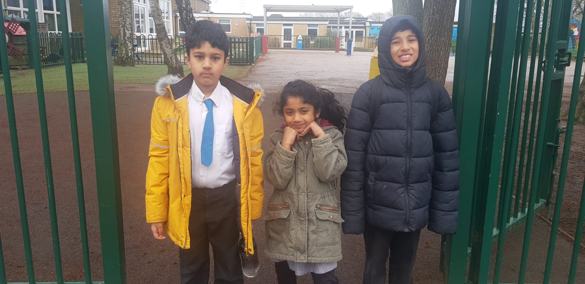

children's hobies
- Jai Pawar
- playing basketball
- swimming
- maths
- Om Pawar
- like to play game on computer
- he likes playing football
- his favourite ice cream is vanila
- he only eats in creams ice cream parlour
- he enjoys ice cream with his brothers and sister
- Radha Rani
- Radha likes karate
- Raha like dance
- she like bharatnatyam
- she like acrobics
